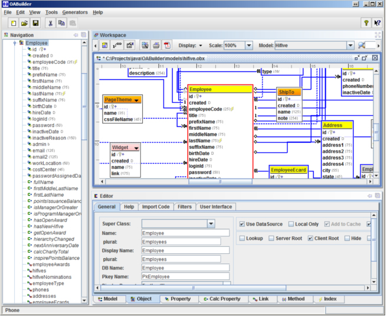

The OA library and OABuilder are used to create full applications, using a
model driven approach (MDx). It automates and reduces most of software programming for applications and platforms.
More then a tool or library, it is a way for developing software. With OA, we have a sweet spot/niche that we have created that allows us to create automated, high productivity solutions for any software technology.
OABuilder is used to create an application that can be a single user, client/server, and include a web application. Currently, the database, server, client application are 100% generated.
For web applications, the model/"back end" is 100% generated, and there are components that are used to bind it to any place in a web/html5 web page. This allows for a web designer to build out a whole web site, and then have the "back end" dynamically binded to it - all without changing/reworking the original design.
OA is datasource independent, which means that it can work with any type of data storage. Queries are simple and use the structure of the object model, which is then converted to whatever language (ex: SQL) is used.
Basically, OA is independent of anything ... UI, tier, even the programming language. How it was designed allows it to be implemented for any type of software technology. The important point is that OA does not replace anything, but rather automates how it works. For example, for a relational database using JDBC, access to the connection pool, etc is still available and not hidden away.
Our goal with OA is to be able to focus on the end product, so that any type of modeling/requirements can be automated to automatically work. With OA, the "heavy lifting" is done, and things "just work" in a way that is consistent. This allows for a "cookie cutter" type approach, without having limitations on what the tool can do.
Modeling, and design tools have been around for a long time. In most cases, the value of the design has only been used to capture the requirements, and is quickly outdated once development is started.
With OA, the design process is now the driving factor of how the software works. A full application can be generated from a model, eliminating over 90% of the code for most projects. This makes the model the most important element for a project, and the "go to" for maintaining and growing. It also allows for a more creative process, since changes are easy to make as a project is under way.
What makes OA unique from other tools is in how the applications are generated. OA uses a template project for the structure/framework of the project, and uses the OA library in the code that is generated. The code generation features in OA are designed to make it a custom code generation tool. For example, the Swing UI generation can be used for any other UI component set. This will allow us to take any component set and allow it to work with any model - making it a reusable, MVC bindable component. The ORM generation has been used for other ORM frameworks. The same can be done for other areas like databases, and even languages like .NET, Ruby, Scala, PHP, JS, etc.
The OA library uses an MVC pattern, that has a "reactive" Model. This is done by using the OA object and collection class that are observable - the OAObject and Hub collection. How this is done is very unique, and the core piece behind all of what can be done with OA - the "secret ingredient". Combined with meta-data and the reflective capabilities, this allows for very productive development - even without using OABuilder. This is an important factor, in that it shows that OABuilder is not a heavy tool that just spits out code. Instead, the value of OABuilder is that it takes automation to the next level. Where the OA library increases productivity, OABuilder now is able to generate using that same coding that would have been manually done.
Another concern with using a modeling tool and libraries is the constraints and the 80-20 rule. An important thing with OA is that it is easy to "not use" it, and have custom code co-exist. OA was designed to make it easy to automate other components, so that they are able to work with any model. This is unique in that most tools have there own components that are used, and using other components can be difficult. With OA, we are able to take any components and make them "object aware", that are reusable with any model.
The learning curve for developers is very low, and allows them to be productive very quickly. The training videos, documentation, sample applications & code, and consulting/support services from ViaOA, make sure that you have all of the support is needed.
OA is easy to use with other code and libraries, and make it reusable for any other project. For example, since OA uses the MVC approach, it's easy to take other UI components and transform them to be able to be used for any model.
OA does not have an all or nothing approach that says it will only work for projects created with OABuilder and OA libraries. Using it for existing or legacy system allows an existing project to start having areas refactored to use the OA library. Another benefit is that OA can be used to create an interface to an existing system. For example, to create a custom UI or web app that interfaces to an existing business system.
The end result is more then a "crud" type application. What is developed is a sophisticated, but simple application that makes it easy to do complex things. The code that is generated is much less then what other tools would produce, and at the same time has more functionality.
Our work with project managers and developers has been very positive. With OA, they have been impressed by how powerful the applications are that are created. A common response is that "we did not know you could do that", along with "how did you do that?".
We know that developers are usually reluctant to use a new tool, for many valid reasons. For OA and OABuilder, we have made it easy to be able to use it and get results without investing a lot of time. Another benefit is that developers can see how things are done, allowing them to learn from that and be involved in extending new features. The end result is any programming that is done is of greater value.
For Via Object Architects, we have a strong core that allows for working with any other software technologies. We believe that this has the potential to change how software will be created.
What is interesting is that there is nothing new here, except how it is being done.
MDx, CASE, code generation, etc and the promise for more productive development processes has been
around for a long time. What ViaOA has to offer is a solution to the issues that have
kept these tools from growing.
This can be compared to when compilers replaced assemblers for software development.
That "leap" had lots of resistance until the compilers proved that it was more productive, without losing
the benefits. With OA, automation is accomplished without sacrifice. We believe we have a development
process that is not about a/the Tool, but a way of developing that includes tools are part of the solution.
Please feel free to contact us anytime - we look forward to hearing from you.
find us on the web at www.viaoa.com